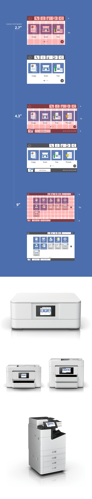

GUI Design
Unified Printer GUI
I worked on a project to unify the GUI for printers for a wide range of uses, from home users to SOHO and office environments. The aim of this project was to enhance the brand image as a printer manufacturer. I effectively used blue, the corporate color representing the company's identity, as the accent color in the GUI. By incorporating flat design, I adapted to the latest design trends while ensuring smooth operability on low-spec devices. Additionally, I developed a grid system that provides beautiful layouts for various display sizes. This made it possible to deliver a consistent user experience regardless of the device used.
In embedded GUIs, ROM (Read-Only Memory) permanently stores immutable data and programs. This memory device has the characteristic of being unchangeable once written. The basic startup process of the system and unchangeable programs are primarily stored in ROM. On the other hand, RAM (Random Access Memory) is volatile memory used to store temporary data and programs. Its content is lost when power is cut, and it is used for dynamic data processing and running applications. Traditional skeuomorphic design, which incorporates real-world textures and dimensionality, has provided users with an intuitive experience. However, its complexity tends to burden both ROM and RAM. In contrast, flat design uses simple and minimal elements to reduce the volume of design assets, thus decreasing ROM usage. Furthermore, by simplifying processes, RAM usage becomes more efficient, enhancing system performance and a smoother user experience.
ホームユーザーからSOHO、オフィス用までの幅広い用途に応じたプリンターのGUIを統一するプロジェクトに取り組みました。このプロジェクトは、プリンターメーカーとしてのブランドイメージを向上させることを目的としています。会社のアイデンティティを表すコーポレートカラーである青を、GUIのアクセントカラーとして効果的に使用しました。また、フラットデザインを取り入れることで、最新のデザイントレンドに適応しつつ、低スペックのデバイスでもスムーズな操作性を実現しました。さらに、様々なディスプレイサイズに対応するため、美しいレイアウトを提供するグリッドシステムを開発しました。これにより、どのデバイスを使用しても一貫したユーザーエクスペリエンスを提供することが可能となりました。
組み込みGUIでは、ROM（Read-Only Memory）が不変のデータやプログラムを永続的に保存します。この記憶装置には一度書き込むと変更できない特性があります。システムの基本的な起動プロセスや変更されないプログラムは、主にROMに格納されます。対して、RAM（Random Access Memory）は一時的なデータやプログラムを保存するための揮発性メモリです。電源が切れると内容は失われ、動的なデータ処理やアプリケーションの実行に用いられます。従来のスキューモーフィックデザインは現実世界のテクスチャーや立体感を取り入れ、ユーザーに直感的な体験を提供してきました。しかし、その複雑さはROMとRAMの両方に負荷をかけがちです。フラットデザインはこれに対し、シンプルでミニマルな要素を用いることで、デザインアセットの量を削減し、ROMの使用量を減らします。また、処理の単純化によりRAMの使用も効率化され、システムの動作速度とスムーズなユーザー体験が向上します。

| Date | 2016 |
|---|---|
| Roll | GUI Designer |
| Tools | Illustrator, Photoshop |